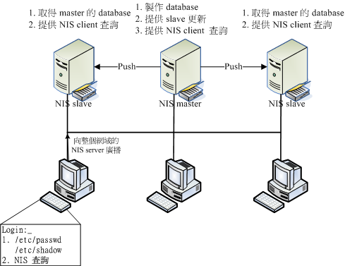
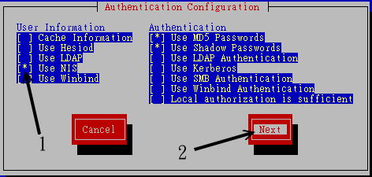
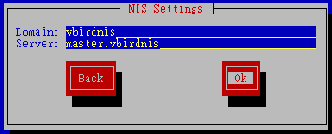

| |
最近更新日期：2006/10/11
本文已不再维护，更新文章请参考这里
|
有没有想过，如果我有十部 Linux 主机，这十部主机仅负责不同的功能，事实上，
所有的主机账号与对应的密码都相同！那么我是将账号与密码分别设定置在十部计算机上面，
还是可以透过一部主机做为账号管理的功能，然后其他的主机只要当用户用登入时，
就必须要到管理账号的主机上面确认其账号与密码呢？哪一个比较方便而且灵活？
当然是找一个账号管理的主机比较方便的多啦！如果有用户要修改密码，不必要去到十部主机修改密码啦！
只要到主要管理主机去修改，其他的主机根本就不需要更动！哈哈！轻松又愉快呢！这个功能的达成有很多的方式，
在这里，我们介绍一个很简单的方式，那就是
Network Information Service 这个 NIS 服务器的架设啦！
|
 本章的行前准备工作 本章的行前准备工作
NIS 最大的用途在于提供客户端的使用者相关参数查询，举例来说，用户的账号、密码、UID、家目录、shell
等等的，都可以透过 NIS 服务器来查询的。但 NIS 所能提供的也就是这样了，他并没有办法提供用户家目录的空间，
因此，一般在高效能运算计算机当中，如果想要让所有的机器都拥有相同的账号密码，
通常使用 NIS 提供身份验证，配合 NFS 提供所需要的磁盘空间的吶！
因此在这一章开始前，你最好知道：
NIS 的由来与功能
在一个大型的网域当中，如果有多部 Linux 主机，万一要每部主机都需要设定相同的账号与密码时，还真是啰唆。
此时，如果能够有一部主控服务器 (master server) 来管理网域中所有主机的账号，
当其他的主机有用户登入的需求时，才到这部主控服务器上面要求相关的账号、密码等用户信息数据，
如此一来，如果想要增加、修改、删除用户数据，只要到这部主控服务器上面处理即可，
这样就能够降低重复设定使用者账号的步骤了。
这样的功能有很多的服务器软件可以达成，这里我们要介绍的则是 Network Information
Services (NIS server) 这个服务器软件喔！底下就先来谈一谈这个 NIS 的相关功能吧！
NIS 的主要功能
通常我们都会建议， 一部 Linux 主机的功能越简单越好，也就是说，一部
Linux 就专门进行一项服务。这样有许多的好处，这包含功能简单所以系统资源得以完整运用，
并且在发生入侵或者是系统产生状况的时候，也比较容易追查问题所在。因此，一个公司内部常常会有好几部
Linux 主机，有的专门负责 WWW 、有的专门负责 Mail 、有的专门负责 SAMBA 等等的服务。
不过，这样虽然有分散风险、容易追踪问题的好处，但是，由于是同一个公司内的多部主机，所以事实上所有的
Linux 主机的账号与密码都是一样的！哇！那如果公司里面有 100 的人的话，
我们就需要针对这么多部的主机去设定账号密码了！而且，如果未来还有新进员工的话，
那么光是设定密码就会使系统管理员抓狂了！
这个时候，让我们换一个角度来思考：如果我设计了一部专门管理账号与密码的主机，而其他的
Linux 主机当有客户端要登入的时候，就必须要到这部管理密码的主机来查寻用户的账号与密码，
如此一来，我要管理所有的 Linux 主机的账号与密码，只要到那部主要主机上面去进行设定即可！
包括新进人员的设定，反正其他的 Linux 主机都是向他查寻的嘛！没错！真是好～这个就是
Network Information Service, NIS 主机的主要功能啦！
事实上， Network Information Service 最早应该是称为 Sun Yellow Pages
(简称 yp)，也就是 Sun 这家公司出的一个名为 Yellow Pages 的服务器软件，请注意，
NIS 与 YP 是一模一样的咚咚喔！这个 Yellow Pages
名字取的真是好！怎么说呢？知道黄页 (Yellow Pages) 是什么吗？就是我们家里的电话簿啦！
今天如果你要查寻一家厂商的电话号码，通常就是直接去查黄页上面的纪录来取得电话号码啊！而这个 NIS
也一样，当使用者要登入时， Linux 系统就会到 NIS 主机上面去找寻这个使用的账号与密码信息来加以比对，
以提供使用者登入之用的检验啊！很棒吧！ ^_^
那么 NIS 主机提供了哪些信息呢？还记得账号与密码放置在哪里吧？NIS 就是提供那些数据啦！
主要有底下这些基本的数据提供给有登入需求的主机喔：
| 服务器端文件名 | 档案内容 |
| /etc/passwd | 提供用户账号、UID、GID、家目录所在、Shell 等等 |
| /etc/group | 提供群组数据以及 GID 的对应，还有该群组的加入人员 |
| /etc/hosts | 主机名与 IP 的对应，常用于 private IP 的主机名对应 |
| /etc/services | 每一种服务 (daemons) 所对应的埠口 (port number) |
| /etc/protocols | 基础的 TCP/IP 封包协定，如 TCP, UDP, ICMP 等 |
| /etc/netgroup | 网络群组的定义与使用 (NIS 可能会需要) |
| /etc/rpc | 每种 RPC 服务器所对应的程序号码 |
| /var/yp/ypservers | NIS 服务器所提供的数据库 |
至少可以提供上述这些功能，当然啦，妳也可以自行定义哪些数据库需要，哪些数据库不需要！
NIS 的运作流程
由于 NIS 服务器主要是提供用户登入的信息给客户端主机来查询之用，所以，
NIS 服务器所提供的数据当然就需要用到传输与读写比较快速的 "数据库" 文件系统，
而不是传统的纯文本数据。为了要达到这个目的，所以 NIS
服务器就必须要将前一小节提到的那些档案制作成为数据库档案，
然后使用网络协议让客户端主机来查询啰。至于所使用的通讯协议与前一章的
NFS 相同，都使用远程过程调用 (RPC) 这个玩意儿喔！
此外，如果在一个很大型的网域里面，万一所有的 Linux 主机都向同一部 NIS 服务器要求用户数据时，
这部 NIS 服务器的负载 (loading) 可能会过大。甚至如果考虑到数据使用的风险，
要是这单一的一部 NIS 服务器挂点时，那其他的 Linux 主机还要不要让 users 登入啊？
所以啰，在较为大型的企业环境当中， NIS 服务器可以使用 master/slave
(主控/辅助服务器) 架构的。
Master NIS 服务器提供系统管理者制作的数据库， slave 则取得来自 master 的数据，并藉以提供其他客户端的查询。
客户端可以向整个网域要求用户资料的响应，master 与 slave 皆可回答，
由于 slave 的数据来自于 master ，所以用户账号数据本身是同步的！
如此一方面可以分散 NIS 服务器的负载，
而且也可以避免因 NIS 服务器挂点而导致的无法登入的风险。

图一、NIS 的运作流程
整个 NIS 的运作就如同上图，首先必须要有 NIS server 的存在，之后才会有 NIS Client 的存在。
那么当使用者有登入的需求时，整个 NIS 的运作程序是：
- 关于 NIS Server (master/slave) 的运作程序：
- NIS Master 先将本身的账号密码相关档案制作成为数据库档案；
- NIS Master 可以主动的告知 NIS slave server 来更新；
- NIS slave 亦可主动的前往 NIS master server 取得更新后的数据库档案；
- 若有账号密码的异动时，需要重新制作 database 与重新同步化 master/slave。
- 关于当 NIS Client 有任何登入查询的需求时：
- NIS client 若有登入需求时，会先查询其本机的 /etc/passwd, /etc/shadow 等档案；
- 若在 NIS Client 本机找不到相关的账号数据，才开始向整个 NIS 网域的主机广播查询；
- 每部 NIS server (不论 master/slave) 都可以响应，基本上是『先响应者优先』。
从上面的流程当中，你会发现 NIS client 还是会先针对本机的账号数据进行查询，
查不到才到 NIS server 上头寻找。因此，如果你的 NIS client 本身就有很多一般使用者的账号时，
那跟 NIS server 所提供的账号就可能产生一定程度的差异啰！
所以，一般来说，在这样的环境下， NIS client 或 NIS slave server
会主动拿掉本机本身的一般使用者账号，仅会保留系统所需要的 root 及系统所需账号而已。
如此一来，一般使用者才都会经由 NIS master server 所控管啊！ ^_^
根据上面 图一的说明，我们的 NIS 环境大致上需要设定的基本组件就有：
- NIS Master server ：将档案建置成数据库，并提供 slave server 来更新；
- NIS Slave server ：以 Master server 的数据库作为本身的数据库来源；
- NIS client ：向 master/server 要求登入者的验证数据。
就让我们开始来玩一玩这个 NIS 的设定吧！
NIS Server 端的设定
NIS 服务器端主要在于提供数据库给客户端作为验证之用，并且服务器端因为数据库的来源又可分为
master/slave 两大类。底下我们将会介绍这两种服务器的安装方式哩！
所需要的套件
由于 NIS 服务器需要使用 RPC 协议，且 NIS 服务器同时也可以当成客户端，
因此他需要的套件就有底下这几个：
- yp-tools ：提供 NIS 相关的查寻指令功能
- ypbind ：提供 NIS Client 端的设定套件
- ypserv ：提供 NIS Server 端的设定套件
- portmap ：就是 RPC 一定需要的数据啊！
如果你是使用 Red Hat 的系统，例如我们的 CentOS 4.x 的话，那你可以利用『 rpm -qa | grep '^yp' 』
来检查是否有安装上述的套件。一般来说 yp-tools, ypbind 都会主动的安装，不过 ypserv 可能就不会安装了。
此时建议你直接使用『 yum install
ypserv 』来安装吧！立刻就装好了。底下立刻来设定啰！
NIS 的套件结构
在 NIS 服务器上最重要的就是 ypserv 这个套件了，而 ypserv 主要则是提供了底下这些重要数据：
配置文件方面：
- /etc/ypserv.conf：这是最主要的配置文件，
可以规范 NIS 客户端是否可登入的权限。
- /etc/hosts：非常重要！每一部主机都需要记录才行！！
- /etc/netgroup：设定信任的主机与网域；
- /var/yp/Makefile：与建立数据库有关的动作配置文件；
- /etc/sysconfig/network：可以在这个档案内指定 NIS 的网域 (nisdomainname)。
服务器提供的主要服务方面：
- /usr/sbin/ypserv：就是 NIS 服务器的主要提供服务；
- /usr/sbin/rpc.ypxfrd：用来作为 master/slave 主机之间传输数据库的服务；
- /usr/sbin/rpc.yppasswdd：提供额外的 NIS 客户端之用户密码修改服务，
透过这个服务， NIS 客户端可以直接修改在 NIS 服务器上的密码。相关的使用程序则是 yppasswd 指令；
与数据库有关的指令方面：
- /usr/sbin/yppush：master 主机将数据库直接送至 slave 的指令；
- /usr/lib/yp/ypinit：建立数据库的指令，非常常用；
- /usr/lib/yp/ypxfr：传送数据库的指令，在该目录下尚有
ypxfr_1perday, ypxfr_1perhour, ypxfr_2perday 等等。
一个实作案例
如果您有观察过 图一的话，你会发现到我们的 NIS 需要设定 Master/Slave 及 client 等，
鸟哥这里提供一个案例，里头就包括这三个组件啦！不过如果你的网域是比较小的环境，
那底下提供的 NIS slave server 你可以略过不看！鸟哥在这里的假设是这样的：
- NIS 的域名为 vbirdnis
- 整个内部的信任网域为 192.168.1.0/24
- NIS master server 的 IP 为 192.168.1.2 ，主机名为 master.vbirdnis
- NIS slave server 的 IP 为 192.168.1.10，主机名为 slave.vbirdnis
- NIS client 的 IP 为 192.168.1.100，主机名为 client.vbirdnis
底下我们就一个一个来设定吧！
NIS master 的设定与启动
NIS 的设定真是很简单，首先，你必须要在 NIS master 这部服务器上面搞定你的账号与密码相关数据，
这包括 /etc/passwd, /etc/shadow, /etc/hosts, /etc/group .... 等等，都得要先搞定才行！
详细的账号相关资料请参考 基础篇的账号管理章节。
等到搞定之后你就可以继续 NIS 服务器的设定了：
设定 NIS 的域名 (NIS domain name)
因为所有的 NIS server/client 都需要设定 NIS 领域名才行，所以就设定吧！设定的方式很简单，
直接以 nisdomainname 这个指令来下达即可。(其实 nisdomainname 与 ypdomainname 及 domainname
都是一模一样的指令啦！你只要记住一个指令名称即可。请自行 man domainname 吧！)
[root@linux ~]# nisdomainname [NIS 领域名]
参数：
若没有加上领域名，则会显示出目前的 NIS 领域；
[root@linux ~]# nisdomainname vbirdnis
[root@linux ~]# nisdomainname
vbirdnis <==瞧！已经设定了 NIS 领域名啰！
|
如果确定每次开机时都需要启动这个 NIS 领域名的话，直接写到 /etc/rc.d/rc.local 去：
[root@linux ~]# vi /etc/rc.d/rc.local
# 加入底下这一行：
/bin/nisdomainname vbirdnis
|
若是想要在启动 NIS 时就自动设定好 NIS 领域的话，可以利用 /etc/sysconfig/network
这个档案，写成如下所示的模样：
[root@linux ~]# vi /etc/sysconfig/network
# 加入底下这一行：
NISDOMAIN=vbirdnis
|
如此一来，你的服务器就会在开机时，或者是在启动 NIS 相关服务时，就能够自行设定好 NIS 领域啰！
主要配置文件 /etc/ypserv.conf
这个配置文件就是 NIS 服务器最主要的配置文件啦！内容其实很简单，你可以保留默认值即可。
不过，也可以作一些更动啦！
[root@linux ~]# vi /etc/ypserv.conf
dns: no
# NIS 服务器的使用时机绝大部分都是在局域网络内而已，所以不需要 DNS 系统，
# 只要 /etc/hosts 设定正确即可！！
files: 30
# 预设会有 30 个数据库被读入内存当中，因为我们的账号档案其实不多，
# 30 个已经足够使用了！
slp: no
slp_timeout: 3600
# 这两个与 SLP 服务有关，因为我们仅使用单纯的 NIS ，所以不需要启动。
xfr_check_port: yes
# 这个与 master/slave 有关，将同步更新的数据库比对所使用的端口，
# 放置于小于 1024 的埠口内。
# 底下则是设定限制客户端或 slave server 查询的权限，利用冒号隔成四部分，分别为：
# [主机名/IP] : [NIS域名] : [可用数据库名称] : [安全限制]
# [主机名/IP] ：可以使用 network/netmask 如 192.168.1.0/255.255.255.0
# [NIS域名] ：例如本案例中的 vbirdnis
# [可用数据库名称]：就是由 NIS 制作出来的数据库名称；
# [安全限制] ：包括没有限制 (none)、仅能使用 <1024 (port) 及拒绝 (deny)
# 一般来说，你可以依照我们的网域来设定成为底下的模样：
127.0.0.0/255.255.255.0 : * : * : none
192.168.1.0/255.255.255.0 : * : * : none
* : * : * : deny
# 星号 (*) 代表任何数据都接受的意思。上面三行的意思是，开放 lo 内部接口、
# 开放内部 LAN 网域，且杜绝所有其他来源的 NIS 要求的意思。
# 万一上面这三行权限相关的设定无法让你的 NIS 顺利的生效时，
# 你可以先将上面三行批注，然后加入底下这一行：
* : * : * : none
# 这样应该就能够让 NIS 顺利的联机了。
|
设定主机名 (/etc/hosts) 与建立信任群组 (/etc/netgroup)
在 /etc/ypserv.conf 的设定当中我们谈到 NIS 大部分是给局域网络内的主机使用的，
所以当然就不需要 DNS 的设定了。不过，由于 NIS 使用到很多的主机名，
所以你一定要设定好 /etc/hosts 对应，否则会无法成功联机 NIS ！
这个很重要，绝大部分的朋友无法达成 NIS server/client 的联机都是这里出问题而已。
依据 本案例的设定值，你应该这样做：
[root@linux ~]# vi /etc/hosts
192.168.1.2 master.vbirdnis
192.168.1.10 slave.vbirdnis
192.168.1.100 client.vbirdnis
|
注意！如果你的主机名与 NIS 的主机名不一样，那么在这个档案当中还是需要将你的主机名给他设定进来！
否则在后面数据库的设定时，肯定会发生问题。当然啦，你也可以直接在 /etc/sysconfig/network
当中直接重新设定主机名，然后重新启动，或者是利用 hostname 这个指令重新设定你的主机名也可以。
除了这个设定之外，有时候你可能需要设定 /etc/netgroup ，虽然比较新的 distributions
都可以略过这个档案的检查了，不过建议您还是可以了解一下的啦！这个 /etc/netgroup
档案可以记录在我们网域里面被信任的群，这个档案的内容当中，每一行都有三个字段，分别以逗号『,』隔开，意义为：
<host>,<user>,<domain>
主机,用户账号,领域名
|
事实上，如果这个档案是『空的』的话，那么代表着『全部的主机、账号与领域名都接受』的意思，因为我们已经在
/etc/ypserv.conf 里头设定好了关于安全的项目了，所以这个档案只要建立即可(本来是不存在的！)：
[root@linux ~]# touch /etc/netgroup
|
启动所有相关的服务
接下来当然是先启动所有相关的服务啰，这包括 RPC, ypserv 以及 yppasswdd 啰！
不过，如果你的 RPC 本来就已经启动的话，那就不要重新启动 portmap 了！
[root@linux ~]# /etc/init.d/portmap start
[root@linux ~]# /etc/init.d/ypserv start
[root@linux ~]# /etc/init.d/yppasswdd start
|
注意，主要的 NIS 服务是 ypserv ，不过，如果要提供 NIS 客户端的密码修改功能的话，
最好还是得要启动 yppasswdd 这个服务才好。在启动完毕后，我们可以利用 rpcinfo 来检查看看：
[root@linux ~]# rpcinfo -p localhost
program vers proto port
100000 2 tcp 111 portmapper
100000 2 udp 111 portmapper
100004 2 udp 942 ypserv
100004 1 udp 942 ypserv
100004 2 tcp 945 ypserv
100004 1 tcp 945 ypserv
100009 1 udp 950 yppasswdd
[root@linux ~]# rpcinfo -u localhost ypserv
program 100004 version 1 ready and waiting
program 100004 version 2 ready and waiting
|
要出现上述的画面才表示正确的启动了 ypserv 喔！若有需要开机立即启动 ypserv 的话，请使用
chkconfig 来处理吧！
建立数据库
在完成了上面的所有步骤后，接下来我们得要开始将主机上面的账号档案转成数据库档案啦！
转换的动作直接透过 /usr/lib/yp/ypinit 这个指令来处理即可！整个步骤是这样做的：
[root@linux ~]# /usr/lib/yp/ypinit -m
At this point, we have to construct a list of the hosts which will run NIS
servers. master.vbirdnis is in the list of NIS server hosts. Please continue
to add the names for the other hosts, one per line. When you are done with the
list, type a <control D>.
next host to add: master.vbirdnis <==这个地方系统会主动捉到
next host to add: <==按下 [ctrl]-d
The current list of NIS servers looks like this:
master.vbirdnis
Is this correct? [y/n: y] y
We need a few minutes to build the databases...
Building /var/yp/vbirdnis/ypservers...
Running /var/yp/Makefile...
gmake[1]: Entering directory `/var/yp/vbirdnis'
Updating passwd.byname...
....中间省略....
gmake[1]: Leaving directory `/var/yp/vbirdnis'
master.vbirdnis has been set up as a NIS master server.
Now you can run ypinit -s master.vbirdnis on all slave server.
|
要注意出现的信息当中，在告知你可以直接输入 [ctrl]-d 以结束的那个地方，
你的主机名会主动的被捉出来，注意！这个主机名务必需要在 /etc/hosts 可以被找到 IP 的对应，
否则会出现问题。另外，万一在执行 ypinit -m 时，出现如下的错误，那肯定就是有些数据没有被建立了！
gmake[1]: *** No rule to make target `/etc/aliases', needed by
`mail.aliases'. Stop.
gmake[1]: Leaving directory `/var/yp/vbirdnis'
make: *** [target] Error 2
Error running Makefile.
Please try it by hand.
[root@linux ~]# touch /etc/aliases
# 解决方法很简单吶！缺少什么档案，就 touch 他就是了！
[root@linux ~]# /usr/lib/yp/ypinit -m
# 然后再重新执行一次即可！
|
如果是如下的错误，那可能是因为：
- 你的 ypserv 没有顺利启动，请利用 rpcinfo 检查看看；
- 你的主机名没有对应好，请检查 /etc/hosts
gmake[1]: Entering directory `/var/yp/vbirdnis'
Updating passwd.byname...
failed to send 'clear' to local ypserv: RPC: Program not
registeredUpdating passwd.byuid...
failed to send 'clear' to local ypserv: RPC: Program not
registeredUpdating group.byname...
....
|
建立了数据库后，你必需要通知 ypserv 与 yppasswdd 这两支服务，告知数据库已经被更改了，
所以你可以这样做：
[root@linux ~]# /etc/init.d/ypserv restart
[root@linux ~]# /etc/init.d/yppasswdd restart
|
要注意啊，如果你的用户密码有变动过，那么你就得要重新制作数据库，重新启动 ypserv 及 yppasswdd 喔！
注意注意啊！
与 slave server 及数据库有关的一些设定 (optional)
当我们执行了 ypinit -m 之后，所有的主机上面的账号相关档案会被转成数据库档案，
这些数据库会被放置到 /var/yp/"nisdomainname" 当中，我们的 nisdomainname 是 vbirdnis ，
所以被建立的数据库通通被放置到 /var/yp/vbirdnis/ 目录中啰！您可以自行去检查看看。
事实上，我们的 ypinit 其实是透过 /var/yp/Makefile 来进行数据库的建立的呢！
所以，我们当然也就可以藉由该档案内的功能来处理某些特定档案的更新啰！
举例来说，若妳仅修改了一个使用者的账号参数而已，所以仅有 /etc/passwd 有被变更过，
那么如何仅针对这个档案进行数据库的更新呢？你可以这样做：
[root@linux ~]# cd /var/yp
[root@linux yp]# make passwd
Updating passwd.byname...
Updating passwd.byuid...
|
这样做就能够更新了，只不过更新后的数据库会被放置到 /var/yp 当中，而不是 /var/yp/vbirdnis 当中，
或许妳还得需要手动移动一下该档案就是了。
再者，如果你有 slave 服务器的话，总是需要进行 master/slave 的同步化吧？
那如何告知我们的 master 服务器将数据库提供给 slave 呢？这个时候就得要修改 /var/yp/Makefile 啰！
您可以自行进入该档案内查阅一些资料，不过，基本上你只要改一个地方就好了：
[root@linux ~]# vi /var/yp/Makefile
# 找到底下这一行：
NOPUSH=true
# 将他改成这样：
NOPUSH=false
|
这个设定值可以将数据库给他『推 (push)』到其他的 slave 服务器上头！接下来，你必需要告知 master
要推出去的数据库是给哪部服务器？所以，你还得要修改这里：
[root@linux ~]# vi /var/yp/ypservers
master.vbirdnis
slave.vbirdnis
# 增加上头这一行！
|
你可以将所有的 slave 服务器都加到 /var/yp/ypservers 档案当中，只要记得该服务器的 IP
必需要在 /etc/hosts 内可以找到对应才行喔！如果你要提供 master/slave 服务器的数据库文件传输时，
那么还需要启动 ypxfrd 这个服务才行！这个服务可以让 slave 服务器主动链接上 ypxfrd 来更新数据库，
可以免除系统管理原自己手动更新啦！启动方式太简单了吧！
[root@linux ~]# /etc/init.d/ypxfrd start
|
做到这里就 OK 啦！您的 NIS Master 服务器已经搞定啰！接下来，您就可以准备处理 slave 服务器，或是直接处理
NIS client 端啰！此外，如果您的 master 机器想要直接将某些特定的数据库直接传给 slave 主机的话，
那么可以使用 yppush 这个指令喔！例如下列范例：
[root@linux ~]# yppush -h slave.vbirdnis passwd.*
|
如果 master/slave 的数据库不符合的话，那么该 passwd.byname 及 passwd.byuid 就会同步更新了！
很简单吧！ ^_^！也就是说，您得先要制作数据库，然后再利用 yppush 来处理数据库的同步啊！
亦即是：
- 先以 useradd username 或 passwd username 等制作出 master 上面的实体用户；
- 再以 make 或者直接以 /usr/lib/yp/ypinit -m 来制作出最新的数据库；
- 利用 yppush 这个指令功能来进行数据库的传输。
如此一来，您就不需要进行 slave 上面的其他数据库处理啦！方便又简单！
NIS slave
的设定与启动 (optional)
参考 图一的 NIS 运作流程当中，我们知道由于
NIS 服务器预设还是会先搜寻自己的 /etc/passwd, /etc/shadow 等信息，因此你最好先将 NIS
slave 的账号与密码数据作个简单的修订，让他保留在比较干净的账号数据，例如仅有系统账号 (UID 小于 500
内的系统账号) 就是一个不错的环境。这样可以避免 UID 重复出现的问题 (在 /etc/passwd 及 NIS
的环境中都出现相同的 UID ，但其相关参数却并相同时，可能有困扰)。
NIS slave 的设定要比 NIS master 简单多了，事实上，很多设定都一样！你甚至可以复制 NIS master
的很多配置文件哩！在你处理完 NIS slave 服务器的账号密码相关档案后，接下来你可以这样设定喔：
设定网域
同样的， NIS slave 也需要设定相同的网域，设定方式可以参考前一小节的介绍，我们这里很快的介绍一遍：
1. 直接建立领域名
[root@linux ~]# nisdomainname vbirdnis
2. 开机立即启动此一领域名
[root@linux ~]# vi /etc/rc.d/rc.local
# 加入底下这一行：
/bin/nisdomainname vbirdnis
3. 预设在启动 ypserv 时，设定 NIS 领域名
[root@linux ~]# vi /etc/sysconfig/network
# 加入底下这一行：
NISDOMAIN=vbirdnis
|
主要配置文件 /etc/ypserv.conf
这个配置文件也是很简单的啦！可以与前面的 NIS master 相同即可。在鸟哥的这个例子当中，
我是直接在该档案加入这三行而已喔！
[root@linux ~]# vi /etc/ypserv.conf
127.0.0.0/255.255.255.0 : * : * : none
192.168.1.0/255.255.255.0 : * : * : none
* : * : * : deny
|
/etc/hosts 及 /etc/netgroup
这两个档案不陌生吧？直接设定他吧！
[root@linux ~]# touch /etc/netgroup
[root@linux ~]# vi /etc/hosts
192.168.1.2 master.vbirdnis
192.168.1.10 slave.vbirdnis
192.168.1.100 client.vbirdnis
|
启动所有服务及建立数据库
还记得吧？我们需要 portmap 与 ypserv 喔！至于 yppasswdd 这个功能主要是在修改主控服务器 (master)
上面的账号密码，而 slave 只是在取得 master 的数据库而已，本身并不具备修改数据库的能力的，
所以 slave 当然就不需要这个东西啦！所以你可以这样设定：
[root@linux ~]# /etc/init.d/portmap start
[root@linux ~]# /etc/init.d/ypserv start
|
那如何取得来自 master 服务器的数据库档案呢？还是一样得要透过 /usr/lib/yp/ypinit 这支程序啦！
只是他的指令下达会变成这样喔：
[root@linux ~]# /usr/lib/yp/ypinit -s master.vbirdnis
参数：
-s ：后面接预计取得的 master 主机名！
We will need a few minutes to copy the data from master.vbirdnis.
Transferring hosts.byname...
Trying ypxfrd ... not running
Transferring services.byname...
Trying ypxfrd ... not running
....中间省略....
|
虽然使用上头的指令事实上会出现有错误的信息，就是那个『Trying ypxfrd ... not running』的信息，
但事实上数据库的转移还是成功的！不相信的话，你可以使用底下这个指令来测试一下数据库是否正确：
[root@linux ~]# ypcat -h localhost passwd.byname
|
如果有正确的输出账号/密码数据的话，呵呵！那就是 OK 的啦！如此一来，您的 NIS slave 就启动 OK 啦！
不过，由于您的 master 服务器可能随时都会有账号/密码的改变，所以你其实是可以使用 ypxfrd
这个服务来帮助数据库在 master/slave 间转移的！如果你有在 master 服务器启动 ypxfrd 的话，
那么你可以在 slave 的工作排程上这样处理的：
[root@linux ~]# vi /etc/crontab
# 在最后加入以 ypxfr 传输数据的 script 喔！
20 * * * * root /usr/lib/yp/ypxfr_1perhour
40 6 * * * root /usr/lib/yp/ypxfr_2perday
55 6,18 * * * root /usr/lib/yp/ypxfr_2perday
# 事实上，这三支程序只是利用 /usr/lib/yp/ypxfr 来进行数据库的更新，
# 不过鸟哥实际进行时，似乎有点小问题，或许需要修改一下上述三个档案，
# 我们以 /usr/lib/yp/ypxfr_1perhour 为例来说明好了：
[root@linux ~]# vi /usr/lib/yp/ypxfr_1perhour
# 找到这一行：
$YPBINDIR/ypxfr $map
# 将他改成这样：
$YPBINDIR/ypxfr $map -h master.vbirdnis
|
Tips:
事实上，如果 master 服务器有启动 ypxfrd 的话，那么下达 ypinit -s master.vbirdnis 时，
就不会有错误讯息啰！ ^_^
|  |
如此一来，系统将会针对不同的数据库来与 master 服务器进行比对，若发现 master
的数据较新时，则会进行更新！很方便吧！当然啦，您也可以直接透过系统管理员执行
ypinit -s master.vbirdnis 来处理就是了。此外，直接利用 master 机器上的 yppush
也是个不错的思考方向！
启动 ypbind ，让 slave 也可以查询账号/密码
如果你的 slave 并没有启动 ypbind 的话，那么 slave 将无法以 master 所提供的账号来登入的！
所以接下来， 妳必须要启动 ypbind
这个查询的功能，好让我们的 slave 服务器也可以针对我们自己的 NIS 网域 (vbirdnis) 进行查询。
至于 ypbind 的启动方式则请参考下一小节的
NIS client 设定方式吧！
至此为止，你就已经具有一部 NIS master 及多部 NIS slave 的服务器啰！接下来就来玩玩 NIS client 吧！
防火墙设置
又来到了防火墙的规划了！要注意的是，我们的 NIS 与 NFS 都是使用 RPC Server 的，所以啰，都可以直接管制
111 这个 port 即可！能够直接以 iptables 管理 111 这个 port ，例如仅允许 192.168.1.0/24
这个网域进来的话，可以在你的防火墙规则上面加上：
/sbin/iptables -A INPUT -p tcp -s 192.168.1.0/24 --dport 111 -j ACCEPT
/sbin/iptables -A INPUT -p tcp --dport 111 -j DROP
|
NIS Client 端的设定
我们知道网络联机是双向的，所以 NIS server 提供数据库档案，NIS client 当然也需要提供一些联机的软件啰！
这个联机的软件就是 ypbind 啦！此外，如同 图一的介绍，在 NIS client 端有登入需求时，
NIS client 基本上还是先搜寻自己的 /etc/passwd, /etc/group 等数据后才再去找 NIS server 的数据库啊！
所以 NIS client 最好能够将本身的账号密码删除到仅剩下系统账号，亦即
UID, GID 均小于 500 以下的账号即可，
如此一来既可让系统执行无误，也能够让登入者的信息完全来自 NIS server ，比较单纯啦！
Tips:
事实上，你想要让 NIS 服务器写入的各项账号数据都在 NIS server 的 /var/yp/Makefile 那个档案设定的！
您可以进入该档案搜寻一下 UID 就知道了！ ^_^
| |
NIS client
所需套件与套件结构
NIS client 端所需要的套件仅有：
即可，yp-tools 提供查询的软件，至于 ypbind 则是与 ypserv 互相沟通的客户端联机软件啦！
另外，在 CentOS 当中我们还有很多配置文件是与认证有关的，包含 ypbind 的配置文件时，
在设定 NIS client 你可能需要动到底下的档案：
- /etc/sysconfig/network
：里头主要设定了 NIS 领域名，让 ypbind 启动时可以设定好；
- /etc/hosts ：很重要吧！至少需要有各个 NIS 服务器的 IP 与主机名对应；
- /etc/yp.conf ：这个则是 ypbind 的主要配置文件，里面主要规范 NIS server ；
- /etc/sysconfig/authconfig ：规范账号登入时的允许认证机制；
- /etc/pam.d/system-auth ：这个最容易忘记！因为账号通常由 PAM 模块所管理，
所以你必须要在 PAM 模块内加入 NIS 的支持才行！
- /etc/nsswitch.conf
：这个档案重要到不行！可以规范账号密码与相关信息的查询顺序，默认是 /etc/passwd 再 NIS 等等；
另外， NIS 还提供了几个有趣的程序给 NIS 客户端来进行账号相关参数的修改，例如密码、shell 等等，
主要有底下这几个指令：
- /usr/bin/yppasswd ：更改你在 NIS database (NIS Server 所制作的数据库) 的密码
- /usr/bin/ypchsh ：同上，但是是更改 shell
- /usr/bin/ypchfn ：同上，但是是更改一些用户的讯息！
OK！那么底下就让我们开始来设定 NIS 客户端吧！^_^
NIS client
的设定与启动
启动 NIS client 的设定就简单多了！最主要是加入 NIS domain 当中，然后再启动 ypbind 即可。
整个设定过程是这样的：
设定好 NIS domain 以及 /etc/hosts 主机名对应
设定 NIS domain 就利用 nisdomainname 来处理即可啊：
1. 直接建立领域名
[root@linux ~]# nisdomainname vbirdnis
2. 开机立即启动此一领域名
[root@linux ~]# vi /etc/rc.d/rc.local
# 加入底下这一行：
/bin/nisdomainname vbirdnis
3. 预设在启动 ypbind 时，设定 NIS 领域名
[root@linux ~]# vi /etc/sysconfig/network
# 加入底下这一行：
NISDOMAIN=vbirdnis
|
然后则是主机名与 IP 的对应配置文件，重要的很！
[root@linux ~]# vi /etc/hosts
192.168.1.2 master.vbirdnis
192.168.1.10 slave.vbirdnis
192.168.1.100 client.vbirdnis
|
这样就好了！继续下一步！
启动 ypbind 来连结至 NIS server
要启动 ypbind 必须要设定很多的档案，实在很麻烦～不过不打紧，
CentOS 提供给我们一个工具『authconfig』，
透过这个工具我们可以很快的将 ypbind 设定起来。妳只要在终端机环境下下达
authconfig 就能够设定了。设定的方式如下所示：

图二、authconfig 的使用说明
系统原本就会有 MD5 及 Shadow 的加密编码，您只要选择上图的 NIS 项目，然后按下 OK
便进入到如下所示画面：

图三、authconfig 的使用说明(续)
在你输入了正确的 NIS 领域名 (Domain) 以及正确的主机名 (就是主控主机) ，
并且按下 OK 后， 你的 CentOS 就会自动的帮你启动 portmap 以及 ypbind 这两支程序，
同时还会自动的使用 chkconfig 的功能帮您在开机时自动启动 portmap 及 ypbind 喔！
真的是很方便吧！这样你就启动了 ypbind 了！很简单吧！
如果妳真的想要手动处理的话，那么妳必须要手动的修改底下这些档案：
- /etc/nsswitch.conf (修改许多主机验证功能的顺序)
- /etc/sysconfig/authconfig (CentOS 的认证机制)
- /etc/pam.d/system-auth (许多登入所需要的 PAM 认证过程)
- /etc/yp.conf (亦即是 ypbind 的配置文件)
事实上， authconfig 指令也是在处理这些档案而已。
我们就来谈一谈这个小细节吧！
1. /etc/nsswitch.conf
[root@linux ~]# vi /etc/nsswitch.conf
# 这个档案的内容有相当多，不过如果你只想要进行登入验证，可以这样：
passwd: files nis
shadow: files nis
group: files nis
hosts: files nis dns
# 亦即只要加入 nis 即可！这几个设定的意义是：
# 1. passwd: 就是用户相关信息查寻，分别为 /etc/passwd, nis
# 2. shadow: 就是用户密码的查寻， /etc/shadow, nis
# 3. group: 就是用户的群组信息查寻， /etc/group, nis
# 4. hosts: 就是主机名与IP对应的查寻，/etc/hosts, nis 及 /etc/resolv.conf
2. /etc/sysconfig/authconfig
[root@linux ~]# vi /etc/sysconfig/authconfig
USENIS=no
# 这个档案的内容很好修改！只要将上面 NIS 部分改成 yes 即可：
USENIS=yes
3. /etc/pam.d/system-auth
[root@linux ~]# vi /etc/pam.d/system-auth
# 这个部分也很重要！很容易忘记啦！修改 PAM 的配置文件找到如下一行：
password sufficient /lib/security/$ISA/pam_unix.so nullok
use_authtok md5 shadow
# 上面可是同一行喔！将他改成：
password sufficient /lib/security/$ISA/pam_unix.so nullok
use_authtok md5 shadow nis
4. /etc/yp.conf
[root@linux ~]# vi /etc/yp.conf
# 这个是 ypbind 的主要配置文件，主要语法是这样的：
# domain [NIS领域] server [主机名]
# 或者是透过广播，适合用于大网域有多部 NIS 服务器时：
# domain [NIS领域] broadcast
domain vbirdnis broadcast
|
这样设定完成后，再给他启动 ypbind 即可：
[root@linux ~]# /etc/init.d/portmap start
[root@linux ~]# /etc/init.d/ypbind start
|
你可以手动处理，也可以直接使用 authconfig 啦！
鸟哥这里倒是建议您可以直接使用 authconfig 比较简单啊！ ^_^！
另外，那些手动处理的档案当中，
/etc/nsswitch.conf 是很重要的，因为他规范了 Linux 本机要使用某些服务时，例如账号/密码的数据、
主机名的对应数据、port number 对应服务名称的数据等等，这些数据的搜寻顺序！
更多的数据请自行进入该档案内查阅，我们也会在 DNS 服务器章节再次提到这个档案的。
至于其他两个配置文件， /etc/sysconfig/authconfig, /etc/pam.d/system-auth 则是与使用者账号的验证有关，
这是 CentOS (Red Hat 系统) 所惯用的配置文件，如果没有修改设定的话，那么顺利启动 ypbind 也是无法登入的啦！
这样说，可以了解吧！ ^_^
NIS client 端的检验：
yptest, ypwhich, ypcat
如何确定 NIS client 已经连上 NIS server 呢？简单的要命啊！你可以利用 id 这个指令直接检查 NIS server
有的，但是 NIS client 没有的账号，如果有出现该账号的相关 UID/GID 信息时，那表示有连接上啊！
除此之外，我们还可以透过 NIS 提供的相关检验功能来检查喔！底下分别来瞧一瞧：
利用 yptest 检验数据库之测试：
直接输入 yptest 即可检查相关的测试数据，如下所示：
[root@linux ~]# yptest
Test 1: domainname
Configured domainname is "vbirdnis"
Test 2: ypbind
Used NIS server: master.vbirdnis
Test 3: yp_match
WARNING: No such key in map (Map passwd.byname, key nobody)
....中间省略....
Test 8: yp_maplist
hosts.byname
group.byname
passwd.byuid
group.bygid
passwd.byname
hosts.byaddr
....中间省略....
Test 9: yp_all
....中间省略....
1 tests failed
|
从这个测试当中我们可以发现一些错误， 重点在第九个步骤 yp_all 必须要有列出您 NIS server
上头的所有帐户信息，如果有出现账号相关数据的话，那么应该就算验证成功了！比较有问题的是第三步骤，
他会出现在 passwd.byname 当中找不到 nobody 的字样。这是因为早期的 nobody 之 UID 都设定在
65534 ，但 CentOS 则将 nobody 设定为系统账号的 99 ，所以当然不会被记录，
也就出现这一个警告。不过，这个错误是可忽略的啦！ ^_^
利用 ypwhich 检验数据库数量
单纯使用 ypwhich 的时候显示的是『NIS Client 的 domain』名称，而当加入 -x 这个参数时，
则是显示『NIS Client 与 Server 之间沟通的数据库有哪些？』你可以这样测试哩！
[root@linux ~]# ypwhich -x
Use "hosts" for map "hosts.byname"
Use "group" for map "group.byname"
Use "passwd" for map "passwd.byname"
....以下省略....
|
由上面我们可以很清楚的就看到相关的档案啦！这些数据库档案则是放置在我的 NIS Server 的
/var/yp/vbirdnis/* 里面啰！
利用 ypcat 读取数据库内容
除了 yptest 之外，你还可以直接利用 ypcat 读取数据库的内容喔！一般作法是这样：
[root@linux ~]# ypcat [-h nisserver] [数据库名称]
参数：
-h nisserver ：如果有设定的话，指向某一部特定的 NIS 服务器，
如果没有指定的话，就以 ypbind 之设定为主；
数据库名称：亦即在 /var/yp/vbirdnis/ 内的档名啊！例如 passwd.byname
范例：读出 passwd.byname 的数据库内容
[root@linux ~]# ypcat passwd.byname
|
这三个指令在进行 NIS Client 端的检验时，是相当有用的喔！不要忽略了他的存在啊！尤其是刚架设好
NIS Client 时，一定要使用 yptest 去检查看看有没有设定错误喔！根据屏幕显示的讯息去一个一个校正错误才行啊！
使用者参数修改： yppasswd,
ypchfn, ypchsh
好了，完成了上述的设定后，你的 NIS server/client 的账号已经同步了！真是高兴不是吗？
不过，还有个挺大的问题，那就是....
使用者如何在 NIS client 修改他自己的登入参数，例如密码、shell 等等？
因为 NIS client 是藉由数据库来取得用户的账号密码，那如何在 NIS 客户端处理账号密码的订正？
问的好！这也是为何我们需要在 NIS server 启动 yppasswdd 这支服务的主要用意！
因为 yppasswdd 可以接收 NIS client 端传来的密码修改，藉此而处理 NIS server 的 /etc/passwd, /etc/shadow ，
然后 yppasswdd 还能够重建密码数据库，让 NIS server 同步更新数据库！真是很不错啊！ ^_^
那该如何下达指令呢？很简单啊！透过 yppasswd, ypchsh, ypchfn 来处理即可。这三个指令的对应是：
- yppasswd ：与 passwd 指令相同功能；
- ypchfn ：与 chfn 相同功能；
- ypchsh ：与 chsh 相同功能。
因为功能相当，所以鸟哥这里仅说明一下 yppasswd 而已。假设你已经登入 NIS client 那部主机，
并且是以 nistest 这个使用者登入的，记住，这个用户相关数据仅在 NIS server 上。
接下来，这个使用者可以下达 yppasswd ，如下所示：
[nistest@linux ~]$ yppasswd
Changing NIS account information for nistest on master.vbirdnis.
Please enter old password: <==这里输入旧密码
Changing NIS password for nistest on master.vbirdnis.
Please enter new password: <==这里输入新密码
Please retype new password: <==再输入一遍
The NIS password has been changed on master.vbirdnis.
|
嘿嘿！如何，这样就更新了 NIS server 上头的 /etc/shadow 以及 /var/yp/vbirdnis/passwd.by* 的数据库，
简单吧！一下子就同步化了。不过，如果要教育使用者使用 yppasswd 的话，他可能不太能适应，
不要紧，你可以透过修改 alias 或者是置换掉 /usr/bin/passwd 这支程序即可！
NIS 与 NFS 的设定与丛集计算机运用
不晓得您有没有发现一件事情啊！那就是：我们的 NIS Server 设定的用户家目录是在 /home 底下，例如
nistest 这个人的家目录在 /home/nistest (这个目录在 master.vbirdnis 这部主机上面才有)。问题是，当我们登入
NIS Client 主机时，那么我们取得的家目录数据还是在 /home/nistest ，不过事实上
NIS Client 主机并没有 /home/test 这个目录啊，也就是说：
- nistest 这个使用者是在 NIS server 上面建立的，所以有 /home/nistest 这个目录；
- 在 NIS Client 上面没有真正的 nistest 这个账号，因为他是由 NIS server 上面取得的，所以自然也就没有
/home/nistest 这个目录在 NIS client 上面。
这样会造成什么问题呢？呵呵！就是你的 nistest 这个使用者，登入 NIS client 的时候，『会找不到自己的家目录』！
真是糟糕～而且，因为我们的 NIS client 可能有很多部，要是每次登入 NIS Clients 主机的时候，
所拥有的家目录都是个别 NIS client 上面的目录，那么就没有达到 NIS 的功能啦！您说是吧！所以，
如果你需要『 同一个账号登入的每个 NIS Client 所拥有的家目录都是相同的！』
的一个情况，呵呵！就可以使用 NFS 来加以设定啦！ 详细的 NFS 设定我们之前已经提过了，
这里不在赘言，单纯谈一下简单的设定技巧：
- 在 NIS Server 上面开放 /home 这个目录出来；
- 在 NIS Client 上面， mount NIS 主机的 /home 到自己的 /home 里面去！
- 如此一来，不论登入哪一部 NIS Server 或 client ，使用者都是进入到 NIS Server 的 /home 里面的家目录啰！
事实上， 用户的信息除了 /home 之外，像是 /var/spool/mail 以及
/var/spool/cron 也都是可能会有数据存放的目录，你的 NFS 主机应该也要提供这两个目录才好。
设定的方法也不难，我们就简单的谈一谈吧！
1. 设定 NIS server 主机的 NFS 开放目录：
[root@linux ~]# vi /etc/exports
/home 192.168.1.0/24(rw,async)
[root@linux ~]# exportfs -rv
exporting 192.168.1.0/24:/home
[root@linux ~]# /etc/init.d/nfs start
[root@linux ~]# chkconfig --level 35 nfs on
2. 设定 NIS Client 的 mount 数据！
[root@linux ~]# mount -t nfs -o bg,soft 192.168.1.2:/home /home
# 如果这个指令没有问题，可以将他加入 /etc/rc.d/rc.local 当中啊！
|
这样一来，您的 NIS Clients 就具有和 NIS Server 主机一模一样的家目录了！现在您可以立刻登入看看喔！
事实上，现阶段由于个人计算机的相关设备不但便宜，而且运算效能并不比一般大型计算机慢，
因此很多人就在想：『那我可否将许多个人计算机透过网络串接起来，让好几部个人计算机同步运作一个程序，
那么该程序就能够在很短的时间内运算出结果啰！』呵呵！这就是所谓的丛集式个人计算机 (PC cluster) 啦！
要实作 PC cluster 需要很多组件的配合，操作系统也是一个很重要的参数！目前较常使用的当然就是 Linux 啦！
不过我们知道 Linux 系统的运作需要用到使用者的相关参数，例如 UID, GID 等等，所以啰，
在 PC cluster 当中的每一部 Linux 的账号密码以及『文件系统 (filesystem) 』都需要相同才行！
为何文件系统需要相同呢？因为你得要让每部主机都使用到相同的一支程序吧？所以啰，
这就需要 NIS 与 NFS 的同步配合了！
由于『预测』这个玩意儿越来越重要，比如说气象预报、空气质量预报等等，
而预测需要一个很庞大的模式来进行仿真的工作，这么庞大的模拟工作需要大量的运算，
在学校单位要买一部很贵的大型主机实在很不容易！不过，如果能够串接十部双核心的个人计算机的话，
那么可能只需要不到 20 万便能够组成相当于具有 20 颗 CPU 的大型主机的运算能力了！
所以说，在未来 PC cluster 是一个可以发展的课题喔！
鸟哥也有写过一篇不是很成熟的 PC cluster 简易架设，有兴趣的话请自行参考：
指令对应数据
咱们前面总共讲到 NIS master server, NIS slave server, NIS client 这三个组件，
偏偏每个组件所需要启动的服务以及可使用的指令都不相同，
所以这里鸟哥帮大家汇整一下几个常见的指令吧！ ^_^
| 相关的动作 | NIS Master | NIS slave | NIS client |
| 所需要启动的服务 |
ypserv |
ypserv
ypbind |
ypbind |
| 用户能够修改密码 | yppasswdd | |
yppasswd
ypchfn
ypchsh |
| 数据库传输服务 | ypxfrd
yppush | ypxfr | |
| 数据库测试读取 | |
yptest
ypwhich
ypcat |
yptest
ypwhich
ypcat |
| 数据库的建立 | ypinit -m | ypinit -s server | |
重点回顾
- Network Information Service (NIS) 也可以称为 Sun Yellow Pages (yp)，主要是负责在网域当中帮忙
NIS Client 端查寻账号与密码以及其他相关网络参数的服务；
- NIS server 其实就是提供本身的 /etc/passwd, /etc/shadow, /etc/group, /etc/hosts
等账号密码数据，以及相关的网络参数等，以提供网域当中 NIS Client 的搜寻之用；
- NIS 为 server/client 架构，当 NIS client 有账号登入需求时，该主机会 (1)先找自己的 /etc/passwd,
(2)再前往 NIS server 搜寻相关账号资料。
- NIS 使用的套件就是 yp 这个套件，主要分为两部份， ypserv 用在 NIS Server，至于 ypbind 与 yp-tools
则用在 NIS Client 上面。
- 为加快 NIS 查询的速度，因此 NIS server 会将本机的账号数据制成传输较快的数据库档案，
并放置于 /var/yp/(nisdomainname)/ 目录当中；
- 不论是 NIS 或者是 NFS 都是藉由 RPC Server 所启用的，因此都可以使用 rpcinfo 来查寻 NIS 是否已经启动，以及该
daemon 是否已经向 portmapper (RPC server) 注册了！
- 在 NIS Server 的设定当中，最重要的一个步骤就是将账号、密码、网络参数等 ASCII
格式档案转成数据库档案 (database file)，以提供 NIS client 的查寻！而启动 ASCII 转成
database 的程序可以使用 /usr/lib/yp/ypinit -m 或者到 /var/yp 底下执行 make 均可。
- NIS client 端的设定当中，最重要的为 /etc/nsswitch.conf 及 /etc/sysconfig/authconfig
里面的设定，另外， CentOS 的 /etc/pam.d/system-auth 也很重要！；
- 由于 NIS 通常使用于内部网域当中，因此 /etc/hosts 这个档案的设定相当重要！
- 在 NIS master/slave server 当中，建立数据库的方法为 ypinit -m 及 ypinit -s；
- 在 NIS master/slave server 当中，可以藉由 ypxfrd/ypxfr 以及 yppush 来进行主动的更新数据库；
- 若想让使用者在任一部 NIS 管辖的主机登入都可以使用同一份家目录，则需开启 NFS 提供 /home 给所有的主机挂载使用；
课后练习
- 请简单说明 NIS server 的功能与工作流程
当您有多部具有相同账号的 Linux 主机时，即可利用 NIS 所提供的服务，来利用一部 NIS 主机掌控所有的
linux 主机的登入时所需查阅的账号与密码验证。流程如下：
- NIS Server 将自己系统内的 /etc/passwd, /etc/group, /etc/hosts 等制作成为 DBM 的数据库格式档案；
- NIS Client 若有用户登入的要求时，会前往 NIS Server 搜寻数据库里面的数据做为验证之用。
- 每次更动 NIS Server 上面的用户数据时，则 NIS Server 需要重新制作 DBM 数据库档案才行！
- 请简单说明 NIS Server/client 的架构
NIS master/client 的特色为：
- NIS Server 的 master 先将自己的账号、密码相关档案制作成为数据库档案(database file)；
- NIS Server 的 master 将自己的数据库档案传送到 slave 上面；
- NIS Server 的 slave 接收来自『信任的 NIS Server master 主机』的数据后，更新自己的数据库，使自己的数据库与
master 主机的数据同步；
- 网域当中的所有 NIS Client 查寻 NIS Server 时，会找寻『最先响应的那一部 NIS 主机的数据库内容』。
也就是说，架设 slave NIS server 可以分担区域内 NIS 的工作！
- NIS 启动之前需要先启动那个服务，否则就无法启动成功 (提示：RPC Server)
因为 NIS 是 RPC Server 的一种，所以必须要启动 portmap 这个 daemon 才行！
- 我的 NIS 域名为 bird ，另外，我主机的 IP 与主机名为
192.168.5.1/bird.nis.org ，请问要这些信息需要设定在 NIS Server 的哪些档案之内？
域名可以直接手动下达『 nisdomainname bird 』也可以写入 /etc/sysconfig/network 里面『NISDOMAIN=bird』；
IP 与 主机名 需要写入在 /etc/hosts 里面。
- /etc/nsswitch.conf 的功能为何？如果我想要让密码查寻先本地的密码文件，再查寻 NIS ，需要如何设定？
该档案的功能很多，在 DNS 方面，可以用来决定正、反解的顺序，至于密码则可以用来判断何者为先！如果需要先查本机再查
NIS 的密码时，需要的参数：
passwd: files nis
shadow: files nis
- NIS Server 将密码等档案做成数据库以提供 NIS client
来查寻，那么请问使用什么动作后，可以将密码档案转成 NIS 的数据库格式档案？
/usr/lib/yp/ypinit -m
- 如果我想要增加网域当中一个新的账号：newaccount，并且这个
newaccount 可以让 NIS Client 查寻到他的账号与密码，需要进行哪些步骤？
- 先登入 NIS Server 以 useradd newaccount 以及 passwd newaccount 来新增账号；
- 制作密码数据库：『/usr/lib/yp/ypinit -m』
- 重新启动：『/etc/rc.d/init.d/ypserv restart ; /etc/rc.d/init.d/yppasswdd restart』。
- 实作范例题：底下是我的网域参数特征：
network/netmask:192.168.1.0/255.255.255.0
NIS server : 192.168.1.100 (hostname: server.nis.test)
NIS cient: 192.168.1.200 (hostname: client1.nis.test)
NIS domain name: nis.test
利用上面的参数来设定 NIS 架构，请一步一步的写下你的设定。
请自行参考本章节的内容设定
- 承上题：如果我的网域太大了，所以有一部 NIS slave
主机，这部主机的 IP 为 192.168.1.50 ，请问这部主机该如何设定？
请参考本章节的 NIS slave server 的相关说明！
参考数据
2003/05/06：第一次完成日期！
2003/09/16：稍微加入一些信息与微幅修改版面！
2006/09/22：将旧的文章移动到 此处
2006/10/11：啊！过了好久了！修改过程当中历经搬家，所以文章产生较慢啊！这次多加入 NIS slave server 说！
|
|